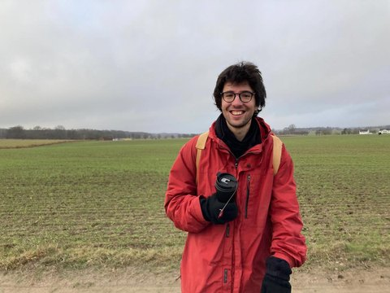

PhD Candidate in Economic Geography & Regional Science
Gran Sasso Science Institute
L'Aquila, Italy
My research examines the geography of innovation and how institutional and intellectual property frameworks shape innovation dynamics across regions. I focus in particular on inclusive forms of innovation and explore how diverse types of intellectual property rights can expand our understanding of innovation and its spatial dynamics.
Methodologically, I like experimenting with different approaches, combining econometric analysis and computational methods with large-scale IP and regional datasets to capture how innovation unfolds in place-specific and sector-specific ways.